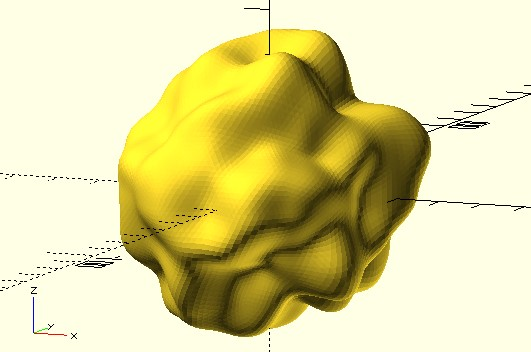

Perlin 雜訊
March 28, 2022如果想產生一條隨機的曲線，最基本的想法是利用隨機函式，在每個 x 處產生一個隨機的 y 值吧！
rands 與 rand 函式
不過，這樣的線連接起來後，比較像個折線，不連續而且無規律。
use <polyline_join.scad>
width = 10;
height = 5;
step = 0.1;
ys = rands(0, height, width / step);
points = [for(i = [0:len(ys) - 1]) [i * step, ys[i]]];
polyline_join(points)
circle(.05);
rands 是 OpenSCAD 原生提供的函式，可以指定隨機範圍以及要產生的隨機個數，傳回的 list 包含了隨機數，如果你覺得它使用上不夠直覺的話，可以使用 dotSCAD 的 rand 函式：
use <polyline_join.scad>
use <util/rand.scad>
width = 10;
height = 5;
step = 0.1;
points = [for(i = [0:width / step]) [i * step, rand(0, height)]];
polyline_join(points)
circle(.05);
兩者都是畫出類似以下的圖案：
一維 Perlin 雜訊
rands 或 rand 函式產生的值不會是連續的，想想看，自然界有許多看似隨機，然而卻又連續的現象，例如岳崚起伏，看似不規則，然而高低之間又有一定的連續性，如果想要在程式中模擬這種隨機又連續的現象，可以考慮 Perlin 雜訊。
來看看一維 Perlin 雜訊的基本原理，你可以在每個整數 x 點產生一個隨機值，然而這個隨機值並不作為 y 值，而是作為穿越該點的一條線之斜率，而該線是曲線在該點的切線：
曲線穿過每個整數 x 點，因此該點 y 值是 0，兩個 x 點間的 y 值，透過 Ken Perlin 設計的內插函式計算而得，如果使用 dotSCAD，知道這些就夠了，因為 dotSCAD 提供實現了 Perlin 雜訊的相關函式，若對如何插值有興趣，可以參考〈Simplex noise demystified〉，上圖其實也是從該文件中取得，在〈NumPy 與 Perlin 雜訊〉，也有談到如何實現。
dotSCAD 的 nz_perlin1 函式，可以指定 x 座標與亂數種子，得到對應 x 的 Perlin 雜訊 y 值，y 值會是 -1 到 1，例如：
use <polyline_join.scad>
use <util/rand.scad>
use <noise/nz_perlin1.scad>
seed = rand(0, 255);
width = 10;
height = 5;
step = 0.1;
points = [
for(i = [0:width / step])
let(x = i * step)
[x, height * nz_perlin1(x, seed)]
];
polyline_join(points)
circle(.05);
這會產生以下的曲線：
可以看到曲線比較連續了，step 越小就會越連續，記得 step 不能是整數，因為方才的 Perlin 雜訊原理談到，x 座標為整數處的 y 值是 0，如果你的 step 是整數，最後只會得到一條 y = 0 的線。
如果你已經有一組 x 值，也可以使用 nz_perlin1s 來產生一組對應的 y 值，例如方才的範例，也可以改寫為以下：
use <polyline_join.scad>
use <noise/nz_perlin1s.scad>
use <util/zip.scad>
width = 10;
height = 5;
step = 0.1;
xs = [for(i = [0:width / step]) i * step];
ys = nz_perlin1s(xs) * height;
polyline_join(zip([xs, ys]))
circle(.05);
dotSCAD 的 zip 函式，可以將指定的 list，按各索引逐一配對，就上例而言，就是將 xs、ys 組成 [x, y] 的 list 傳回。
二維 Perlin 雜訊
一維的 Perlin 雜訊通常用來建立隨機的連續曲線，Perlin 雜訊可以擴展為二維，給定 x 與 y，可以產生 z 雜訊值，可作為高度、灰階度或彩度，例如作為高度的話，可以用來模擬地形，可以使用 dotSCAD 的 nz_perlin2 可以接受 x、y 與亂數種子，得到 -1 到 1 的對應 z 值（如果你有一組二維的座標點，也可以使用 nz_perlin2s）：
use <util/rand.scad>
use <noise/nz_perlin2.scad>
use <surface/sf_thicken.scad>
seed = rand(0, 255);
x_length = 5;
y_length = 5;
height = 1.25;
step = 0.05;
points = [
for(j = [0:y_length / step])
let(y = j * step)
[
for(i = [0:x_length / step])
let(x = i * step)
[x, y, height * nz_perlin2(x, y, seed)]
]
];
sf_thicken(points, .2);
這會產生以下的模型：
三維 Perlin 雜訊
Perlin 雜訊可以擴展至三維，對於三維的 Perlin 雜訊，可以指定 x、y、z 得到雜訊值，那麼這雜訊可以什麼用呢？那就要問你了，你為什麼需要隨機但又連續的雜訊值？也許是透明度？
use <util/rand.scad>
use <noise/nz_perlin3.scad>
seed = rand(0, 255);
range = [0:.2:5];
noised = [
for(z = range, y = range, x = range)
[x, y, z, nz_perlin3(x, y, z, seed)]
];
for(nz = noised) {
color("Gray", alpha = (nz[3] + 1) / 4)
translate([nz.x, nz.y, nz.z])
cube(.2);
}
OpenSCAD 的 color 模組可以著色與設置透明度，這會得到以下的結果：
OpenSCAD 的 color 模組就只是單純的著色，顏色不會真的成為渲染後模型的一部份，那麼來將雜訊看成是密度之類的，只有在密度大於某個值時，才放上方塊呢？如果你有玩過 Minecraft 之類的遊戲，有沒有想過當中的洞穴是怎麼生成的呢？原理就類似以下的程式碼：
use <util/rand.scad>
use <noise/nz_perlin3.scad>
seed = rand(0, 255);
range = [0:.2:5];
noised = [
for(z = range, y = range, x = range)
[x, y, z, nz_perlin3(x, y, z, seed)]
];
for(nz = noised) {
if(nz[3] > 0.2) {
translate([nz[0], nz[1], nz[2]])
cube(.2);
}
}
這會產生以下的圖案：
還能有什麼應用呢？如果對於球面上的每個點取雜訊值，換算為點往內或往外的輻射距離，就可以做成一個泥巴球之類的模型，這就留給你來挑戰看看了：
